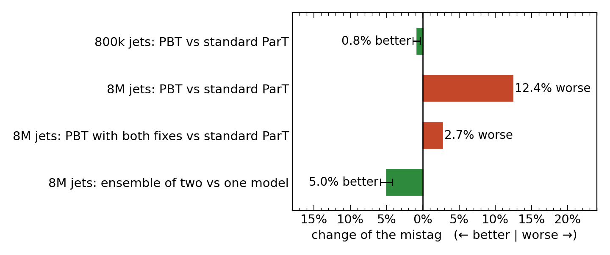
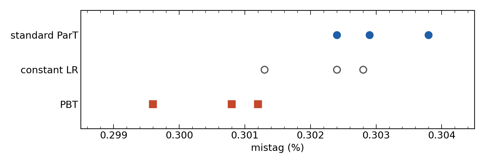
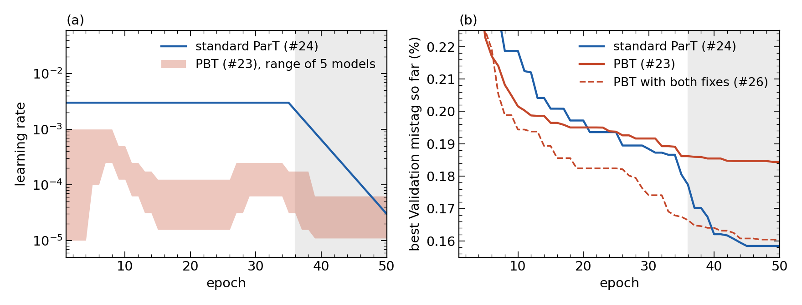
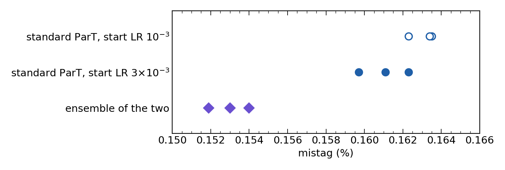
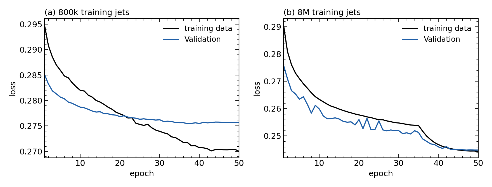

Does Population Based Training give a better jet tagger?
PBT helps only with little training data, and only a little. With much training data PBT is worse, and an ensemble of two normally trained models is better.
- Standard ParT: the usual training of this model: constant learning rate (LR) for 35 epochs, then lowered ×0.01 over 15 epochs. Five start LRs; the best model is kept.
- Constant LR: five models, each with one LR for all 50 epochs.
- PBT: five models train in parallel; every few epochs the weakest copies the weights of the best one and changes its LR.
- Validation: data checked after every epoch to select the model and to steer PBT; 150k jets until 9 November, then 1M jets.
- Mistag: mean background mistag rate (%) at eight b- and c-tag working points, on Test data (2.8M jets, used once per selected model). Lower is better. It is about 0.30% with 800k training jets and 0.16% with 8M training jets, so compare only within the same training data.

Figure 1. Main results. Error bars: 95% interval for the Test sample, mean of 3 seeds.
Stage 1 · Sep 16 – Oct 21 · 800k, then 8M training jets · 1 seed · Validation 150k PBT looked better than constant learning rates
We compared PBT with constant LRs. The comparisons were not valid: the best constant LR was always the highest one tried, so the constant LRs were too low.
| # | Dates | Configuration | Mistag (%) | Compared with |
|---|---|---|---|---|
| 1 | Sep 16 | Constant LR, 5 values 3×10−6 to 1.4×10−5 | 0.3269 | best value is the highest LR |
| 2 | Sep 17–18 | Two LRs of #1, continued to 100 epochs | 0.3156 | |
| 3 | Sep 18 | PBT: LR ×0.8 or ×1.2 every 5 epochs, at most 3×10−5 | 0.3225 | 1.4% better than #1, not valid |
| 4 | Sep 19 | PBT as #3, 100 epochs | 0.3111 | 1.4% better than #2, not valid |
| 6 | Sep 23–29 | PBT: LR change every epoch or every 5 epochs; 2 seeds | 0.316–0.318 | no clear difference |
| 10 | Oct 14–21 | 8M jets: constant LR as #1 and PBT as #3 | 0.2359 | 6.7% better than constant LR (0.2530), not valid |
Stage 2 · Nov 3 – Nov 9 · 800k training jets · 1–2 seeds · Validation 150k A higher constant LR does what PBT did
We tried higher constant LRs and a faster PBT. Both PBT runs lie on the curve of the constant LRs (Figure 2), so PBT gained only because it reached a higher LR. With a second seed the order changed, so from stage 3 we select on 1M Validation jets and compare with standard ParT.

Figure 2. Mistag against the LR of the selected model, seed 12345.
| # | Dates | Configuration | Mistag (%) | Compared with |
|---|---|---|---|---|
| 12 | Nov 3 | Constant LR, 1.4×10−5 to 3×10−5 | 0.3146 | best value is again the highest LR |
| 13 | Nov 3–4 | Constant LR, 3×10−5 to 8×10−5 | 0.3018 | better than every PBT run before |
| 14 | Nov 4 | Constant LR, 8×10−5 to 3.2×10−4 | 0.3033 | no further gain |
| 15 | Nov 4 | PBT: LR ×0.5 or ×2 every 2 epochs, at most 5×10−4 | 0.3003 | 1.0% better than #14 |
| 16 | Nov 9 | #14 and #15 with seed 22345 | 0.3041 | 0.5% worse than constant LR (0.3027) |
| 17 | Nov 9 | PBT as #15 with extra weight copies | 0.3026 | 0.8% worse than #15 |
Stage 3 · Nov 10 – Nov 13 · 800k training jets · 3 seeds · Validation 1M With little training data, PBT is a little better
We trained standard ParT, constant LR and PBT with three seeds each. PBT is the best method for every seed (Figure 3).

Figure 3. Mistag of the selected model of each method (#18); one point per seed.
| # | Dates | Configuration | Mistag (%) | Compared with |
|---|---|---|---|---|
| 18 | Nov 10–13 | Standard ParT (start LR 10−5 to 10−3), constant LR and PBT; 3 seeds | 0.3008, 0.3012, 0.2996 | PBT 0.81% better than standard ParT |
| 19 | Nov 12 | PBT as #18 with a final LR decay; 2 seeds | 0.3008, 0.3012 | same as #18 |
| 20 | Nov 12 | Standard ParT from random weights (no pretraining) | – | far worse (Validation only) |
| 21 | Nov 12 | Average of the weights of several checkpoints | – | no gain (Validation only) |
Stage 4 · Nov 14 – Nov 23 · 8M training jets · 1 seed · Validation 1M With much training data, PBT is worse
We repeated the comparison with ten times more training data, then tried two fixes to PBT. PBT lowers the LR early and falls behind in the final LR decay of standard ParT (Figure 4); the fixes reduce but do not remove the loss.

Figure 4. 8M training jets, seed 12345. (a) LR per epoch. (b) Best Validation mistag so far. Grey: the final LR decay of standard ParT.
| # | Dates | Configuration | Mistag (%) | Compared with |
|---|---|---|---|---|
| 22 | Nov 14–15 | Standard ParT, start LR 10−5 to 10−3 | 0.1635 | best value is the highest LR |
| 23 | Nov 15–17 | PBT as #18, LR at most 10−3 | 0.1812 | 12.4% worse than #24 |
| 24 | Nov 19–20 | Standard ParT, start LR 3×10−3 | 0.1611 | reference |
| 25 | Nov 19–21 | PBT with fix 1: each LR is judged after a short cool-down | 0.1699 | 5.4% worse than #24 |
| 26 | Nov 20–23 | PBT with fixes 1 and 2: plus the final LR decay of standard ParT | 0.1655 | 2.7% worse than #24 |
Stage 5 · Nov 23 – Nov 25 · 8M training jets · 3 seeds · Validation 1M With much training data, an ensemble of two models is better
We averaged the outputs of the two standard ParT models of one seed (start LRs 3×10−3 and 10−3). We fixed this test in advance and repeated it with two new seeds. The ensemble is better than either model for every seed (Figure 5). We could not keep the gain in one model.

Figure 5. Mistag of the two standard ParT models and of their ensemble (#22, #24, #27, #28); one point per seed.
| # | Dates | Configuration | Mistag (%) | Compared with |
|---|---|---|---|---|
| 27 | Nov 23 | Ensemble: average output of #22 and #24 | 0.1530 | 5.1% better than #24 |
| 28 | Nov 23–25 | Ensemble as #27 with seeds 22345 and 32345 | 0.1519, 0.1540 | 4.9% and 5.1% better than one model; mean of 3 seeds 5.0% |
| 29 | Nov 23 | Ensembles of the 800k models | – | no gain (Validation only) |
| 31 | Nov 23–24 | Final LR decay of #24 without dropout | – | worse (Validation only) |
| 32 | Nov 24 | One model trained on the ensemble output (distillation) | – | no gain (Validation only) |
| 33 | Nov 24–25 | Standard ParT, start LR 10−2 | 0.1599 | same as #24 |
Interpretation
- The gains of stage 1 came from a higher LR, not from changing the LR during training.
- With 800k training jets the model starts to memorise its training data after about 20 epochs: the training loss falls below the Validation loss (Figure 6a). Then lowering the LR at the right time helps, and PBT finds that time.
- With 8M training jets the model does not memorise (Figure 6b). Then a high LR for a long time and a decay at the end is best. PBT judges each LR change after two epochs, where a lower LR almost always looks better, so it lowers the LR too early.
- With 8M training jets, the useful gain comes from combining separately trained models. Standard ParT trains both models anyway; the cost is running two models. Two PBT models do not help, because PBT copies weights between them.

Figure 6. Loss per epoch of the best standard ParT model on the training data and on Validation.
Limits: the 8M PBT runs have one seed; all runs start from one pretrained model; the Test data was also looked at in checks before November. Not shown: July–August set-up with an older training method, and technical checks (trials 5, 7, 8, 9, 11, 30); see the full trial list.